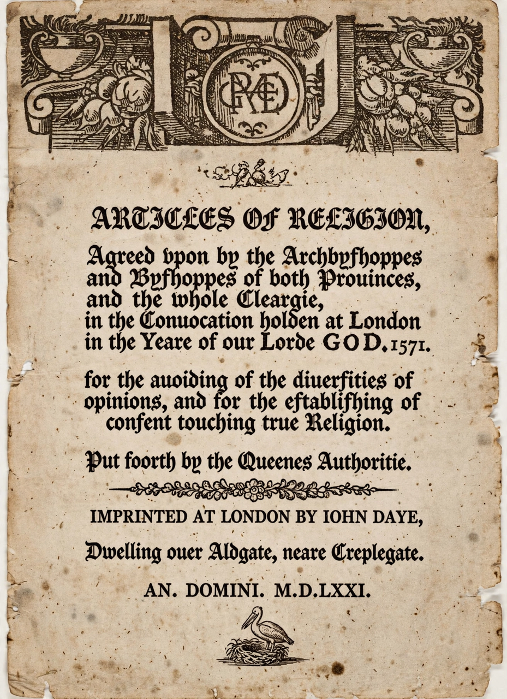

From Wikipedia, the free encyclopedia
| Thirty-nine Articles of Religion | |
|---|---|
 Title page of the 1571 edition | |
| Author | Church of England (Convocation) |
| Published | 1563; final form 1571 |
| Language | Latin and English |
| Subject | Anglican doctrine |
The Thirty-nine Articles of Religion (commonly abbreviated as the Thirty-nine Articles or the XXXIX Articles) are the historically defining statements of doctrines and practices of the Church of England with respect to the controversies of the English Reformation. The articles form part of the Book of Common Prayer.
They were intended to establish Anglican doctrine in a concise form, navigating a middle course — often called the via media — between Roman Catholicism on one side and radical Protestantism on the other. Although not regarded as inspired or as a complete statement of faith, the articles remain the Church of England's historic confession and a reference point across the Anglican Communion.
The articles developed from earlier formularies: the Ten Articles of 1536, the Six Articles of 1539 (the "bloody whip with six strings"), and Archbishop Thomas Cranmer's Forty-two Articles of 1553. Under Elizabeth I, Archbishop Matthew Parker led the Convocation of 1563 in revising the Forty-two Articles into thirty-eight; one further article, on the consecration of bishops, was added, and in 1571 the final form of thirty-nine was authorised. Clergy were required to subscribe to them, a requirement relaxed by the Clerical Subscription Act 1865 to a general assent.
The articles fall into broad groups. Articles I–V treat the doctrine of God, Christology and the resurrection; VI–VIII the authority of Scripture and the creeds; IX–XVIII justification by faith only, good works, predestination and election (Article XVII); XIX–XXXI the Church, councils, purgatory (rejected in Article XXII), the sacraments — of which two, Baptism and the Lord's Supper, are affirmed as ordained by Christ — and the rejection of transubstantiation (Article XXVIII); and XXXII–XXXIX the clergy, excommunication, civil authority (including Article XXXVII on the monarch's governance) and oaths.
The articles influenced other confessions, including the Methodist Articles of Religion abridged by John Wesley in 1784 and the Thirty-Nine Articles as adopted by the Episcopal Church in the United States in 1801. Within Anglicanism they have been variously read by Anglo-Catholics, evangelicals and liberals — notably in John Henry Newman's controversial Tract 90 (1841), which attempted a Catholic interpretation and helped ignite the Oxford Movement, a movement troubled by the era of the Puritan controversies a century earlier in different ways.